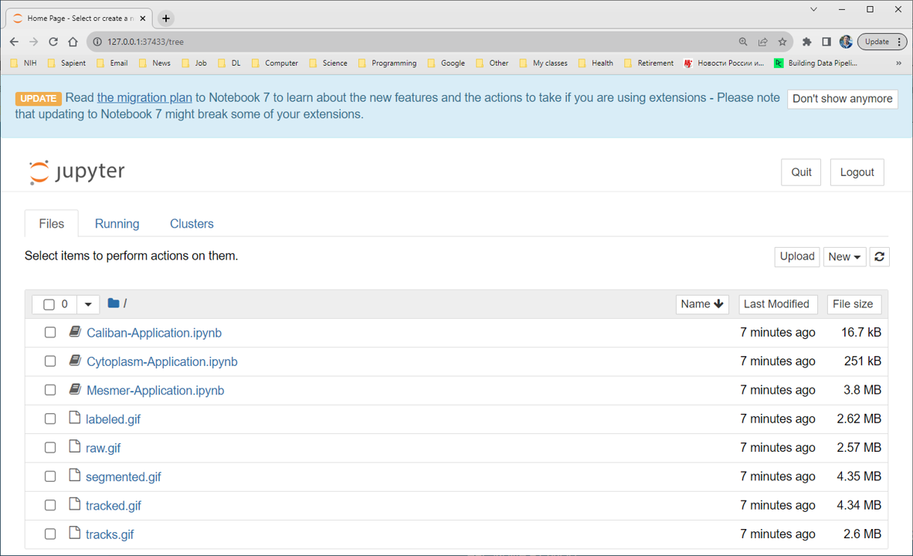

The DeepCell-tf library allows users to apply pre-existing models to imaging data as well as to develop new deep learning models for single-cell analysis. The library specializes in models for cell segmentation (whole-cell and nuclear) in 2D and 3D images as well as cell tracking in 2D time-lapse datasets. The models are applicable to data ranging from multiplexed images of tissues to dynamic live-cell imaging movies.
[user@biowulf]$ sinteractive --mem=8g -c4 \
--gres=gpu:p100,lscratch:10 \
--tunnel
Store the $PORT1 value provided by this command.
[user@cn0861 ~]$ cd /lscratch/$SLURM_JOB_ID [user@cn0861 ~]$ module load deepcell-tf [+] Loading singularity 3.10.5 on cn0793 [+] Loading jupyter [+] Loading deepcell-tf 0.12.6 [user@cn0861 ~]$ git clone https://github.com/vanvalenlab/deepcell-tf [user@cn0861 ~]$ cd deepcell-tf/notebooks/applicationsUse here the $PORT1 value you tored previously:
[user@cn0861 ~]$ jupyter notebook --ip localhost --port $PORT1 --no-browserStore the URL provided by the latter command
[user@cn0861 ~]$ ssh -L $PORT1:localhost:$PORT1 user@biowulf.nih.govNavigate a browser on your local system to the URL you stored.

In the browser, click on one on notebook files etc.: you can pretty much follow the instructions for running Jupyter notrebook: https://hpc.nih.gov/apps/jupyter.html[user@cn0861 ~]$ exit salloc.exe: Relinquishing job allocation 46116226